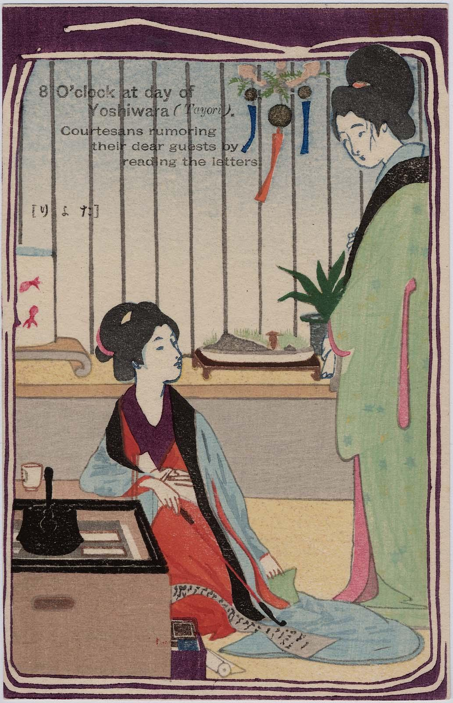
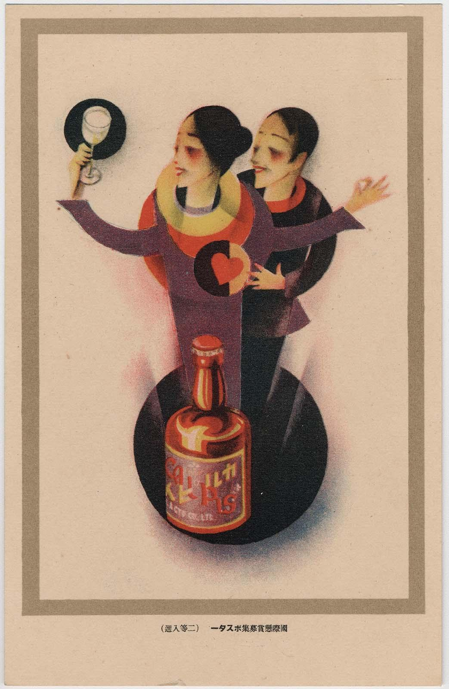
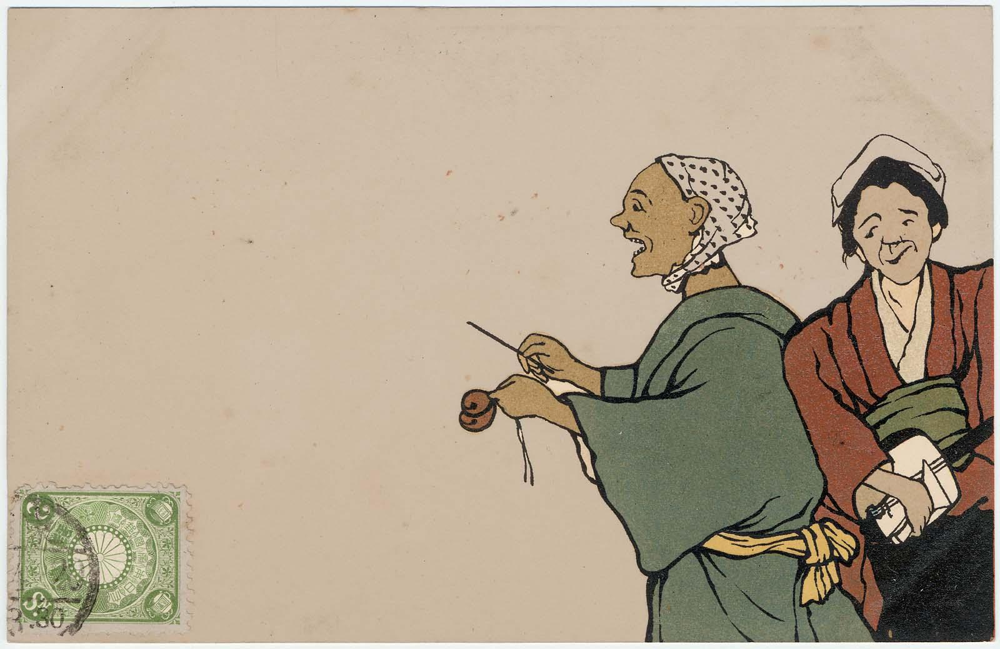

EIGHT O'CLOCK DURING THE DAY IN THE YOSHIWARA
Odake Kokkan (1880-1945)
From series The twelve hours of the Yoshiwara
Postcard
1906

Odake Kokkan (1880-1945)
From series The twelve hours of the Yoshiwara
Postcard
1906
Japan's enthusiastic adoption in the early twentieth century of modern Western printing technology faciliated the mass production of multicolored images, including the new and vibrant popular art form of postcards. From about 1905
through the 1930s. the variety of techniques available to Japanese commerical printers expanded rapidly, and their experimentation often combined two or more production methods on a single card in complex ways. Preicse identification
of technique is therefore a challenge, but at least three of the most commonly employed processes — lithography, collotype, and traditional wood-block printing — may be observed upon a close examination of a few postcard samples.
During this period, Japanese postcard publishers particularly embraced and devloped the planographic (flat surface) printing techniques of color lithography (also known as chromolithography) and collotype. Although these improrts tended
to dominate or even displace the age-old Japanese relief printing methods that used several woodblocks, the transition from woodblock printing to mdoern commerical practices appears to have been a comfortable one.

Max Bittorf
(dates of artist)
Postcard
1924

Unamed Artist
1905
Bunkyō Ward Ōgai Memorial Hongō Library
The reason for such ease may be that the division of labor and the collaboration among publisher, artist, technician, and printer in commerical printing was strikingly similar to that already in place for producing Japanese woodblock prints.
A small number of publishers, Sunbikai for example, chose to produce "supreme art postcards" using such traditional wood-block printing methods in combination iwth stencil or hand-applied color on fine papers, rather than converting to the recently introduced techniques.
Sunbikai postcards were marketed as a higher quality, sophicated, and handmade fine art product compared to the postcards of other publishers. The consumer was encouraged to believe that Sunbikau cards would lend the sender an aura of class and taste.
Of the imported printing techniques, lithography was among the most widespread, having come to Japan at the beginning of the Meiji era. By 1903, lithography that used multiple plates to print large runs fo color images was commonplace. The technique is based on the principle
that oil and water do not mix. In the process, an image is drawn direclty on or transferred to a flat printing surface (either stones or metal plates), manually with greasy materiasl or photographically. The printing ink is then applies to the moistened plate with a roller...
*Read more in the full text